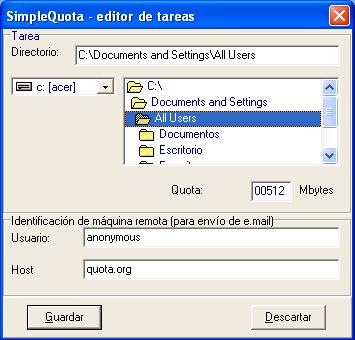

El funcionamiento de SimpleQuota se basa en tareas que debe ejecutar. Las
tareas son definibles por el usuario, quien puede escoger cuantas de ellas quiere
realizar.

Típicamente, cada tarea se basará en
un directorio padre, del cual se quiere
conocer cuánto ocupa, incluyendo por supuesto sus archivos y subdirectorios, y
así sucesivamente. El usuario debe definir para la tarea (es decir, para cada
directorio) cuál es el tamaño máximo en megabytes.
En caso de encontrarse con que el tamaño supera al indicado, SimpleQuota genera un e.mail, por lo que debe dársele un nombre de usuario y un nombre de
host, de manera que pueda realizar el envío.